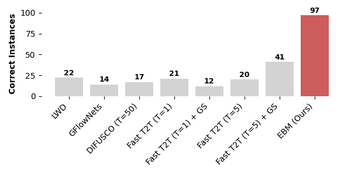
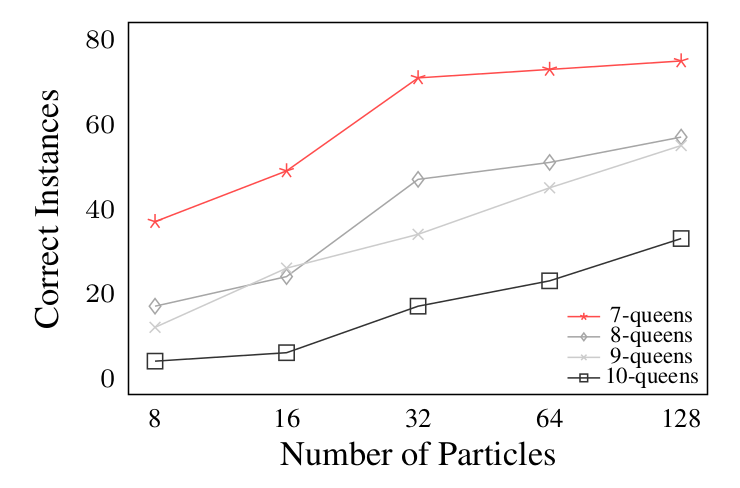
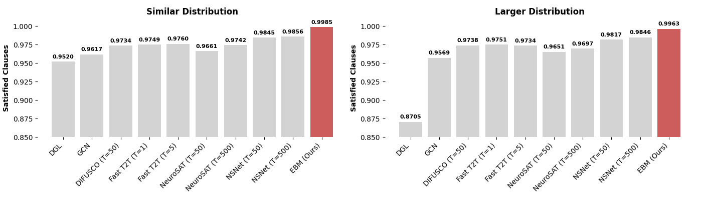
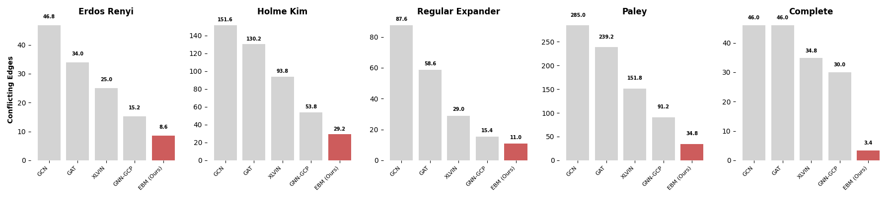

Performance
Our approch can generate correct solutions to the 8-queens problem with a
higher accuracy than existing state-of-the-art methods. We report below
the performance of our method compared with baselines and the effect of
varying the number of particles.

8-Queens Problem Evaluation. We compare the performance
against state-of-the-art combinatorial optimization models on
the 8-queens solution generation task.
All the models were trained with 1 single instance of the 8-queens problem.

Number of Particles vs Correct Instances Across Problem Difficulties.
We sampled 100 solutions each from N-queens problems of increasing difficulty
(7 to 10 queens). In all cases, a higher number of particles results
in more correct instances.
Our method outperforms the previous state-of-the-art neural combinatorial
and SAT solvers, and is able to find a larger number
of correct instances of the problem in the 3-SAT solving.
It consistently outperforms other approaches both within the training distribution and
when applied to larger, out-of-distribution instances.
We report below the comparison in both distributions.

3-SAT Problem Evaluation. We compare the performance
against the state-of-the-art combinatorial optimization models
and neural SAT solvers on the 3-SAT task.
Models are evaluated on a distribution similar to the training
distribution and a larger distribution.
Similar distribution has 100 instances with 20 variables and 91 clauses,
while larger distribution has 100 instances with 50 variables and 218 clauses.
Our approach outperforms existing methods.
We compare our approach with GNN-based methods for graph coloring and show that it
is able to generalize to larger graphs and different graph distributions
while maintaining strong performance across different scales.
On average, our method produces solutions with fewer conflicting edges. The comparison with other methods is presented below.

Graph Coloring Problem Evaluation.
We compare the performance
against canonical GNNs and GNN-based methods for graph coloring
on different random graph distributions.
Performance is measured as the number of conflicting edges, with lower indicating better.
For each distribution, we report the average over five instances.
Our approach outperforms existing methods on most instances
and generalizes better to larger and denser graphs.